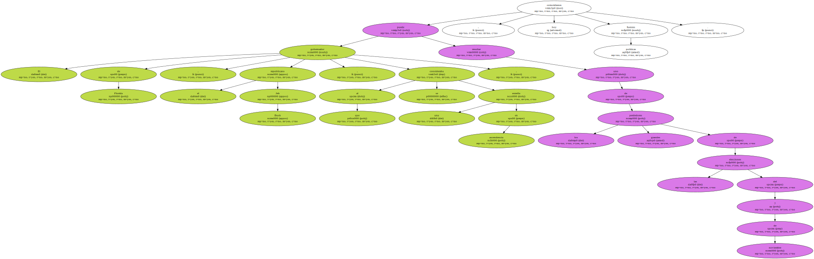
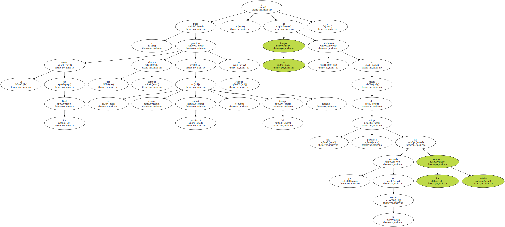
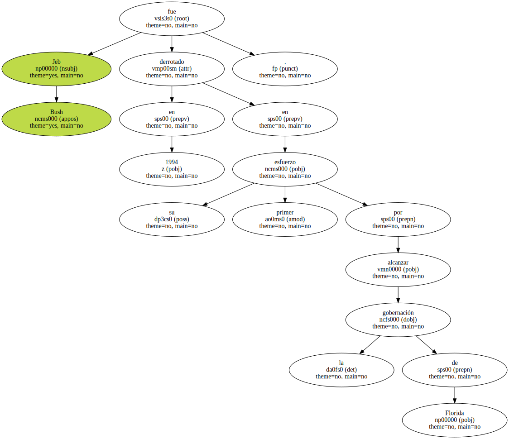
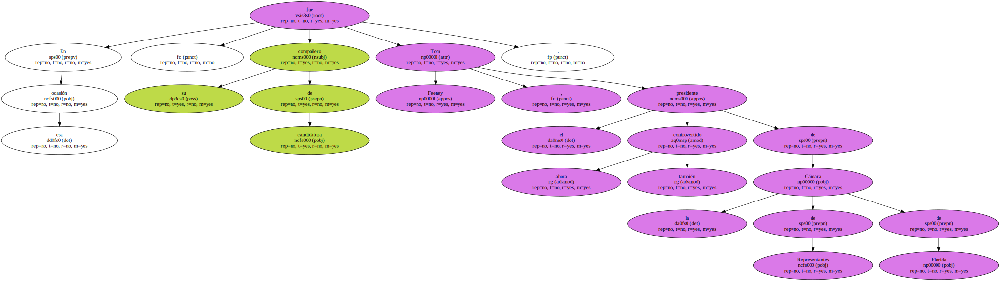
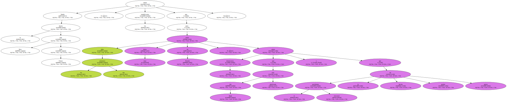
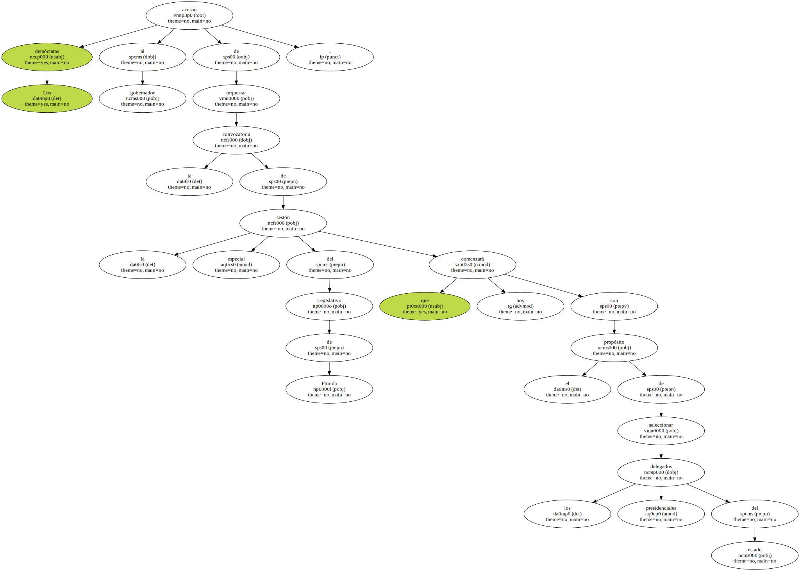
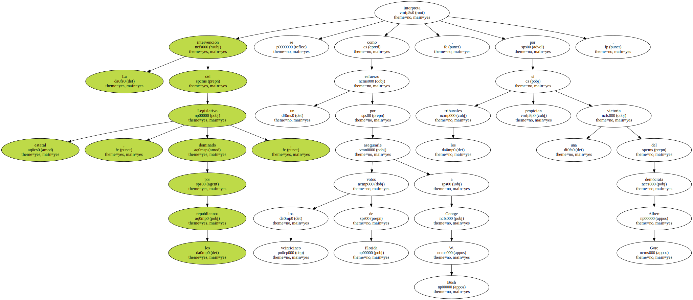
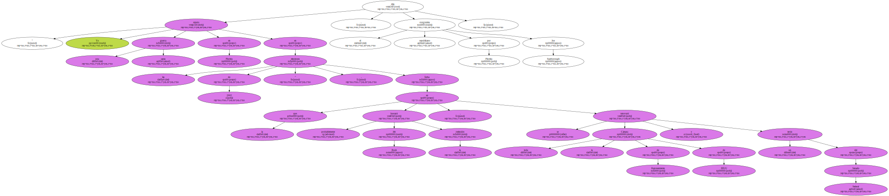
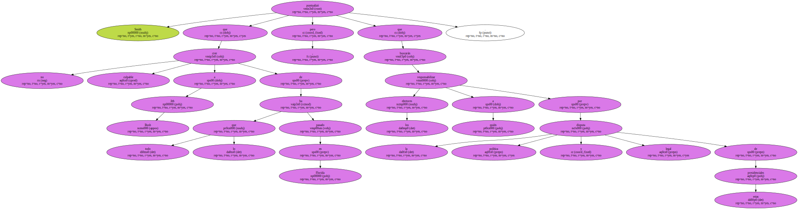

El gobernador de Florida , el republicano Jeb Bush , al que se consideraba una estrella en ascendencia , puede resultar uno de los grandes perdedores de las elecciones del 7 de noviembre , coincidieron hoy fuentes políticas.
El menor de los Bush no pudo garantizar una victoria cómoda a su hermano y candidato presidencial , George W. , en Florida , y su imagen se ha deteriorado en medio del alto voltaje partidista que han suscitado los reñidos comicios en su estado.
" En mi comunidad , con sólo mencionar el nombre de Jeb Bush , se le frunce el ceño a la gente " , dijo el representante estatal demócrata Christopher Smith , que en 1998 apoyó la candidatura del menor de los Bush.

Jeb Bush fue derrotado en 1994 en su primer esfuerzo por alcanzar la gobernación de Florida.
En esa ocasión , su compañero de candidatura fue Tom Feeney , el ahora también controvertido presidente de la Cámara de Representantes de Florida.
Según el diario The New York Times , los republicanos saben que los próximos dos años serán muy duros en Florida , pues los demócratas saben que Jeb Bush está debilitado y que el partidismo electoral le ha hecho perder apoyo.
Los demócratas acusan al gobernador de orquestar la convocatoria de la sesión especial del Legislativo de Florida que comenzará hoy con el propósito de seleccionar los delegados presidenciales del estado.
La intervención del Legislativo estatal , dominado por los republicanos , se interpreta como un esfuerzo por asegurarle los veinticinco votos de Florida a George W. Bush , por si los tribunales propician una victoria del demócrata Albert Gore.
" Yo espero una guerra santa en Florida en las elecciones de 2002 " , fecha en la que probablemente Jeb Bush buscará la reelección , se renovará toda la Cámara de Representantes de EEUU y un tercio del Senado federal , dijo el congresista republicano por Florida Joe Scarborough.
Smith puntualizó que no cree culpable a Jeb Bush de todo lo que ha pasado en Florida , pero que los electores buscarán a quién responsabilizar por la disputa política y legal de estas presidenciales.
